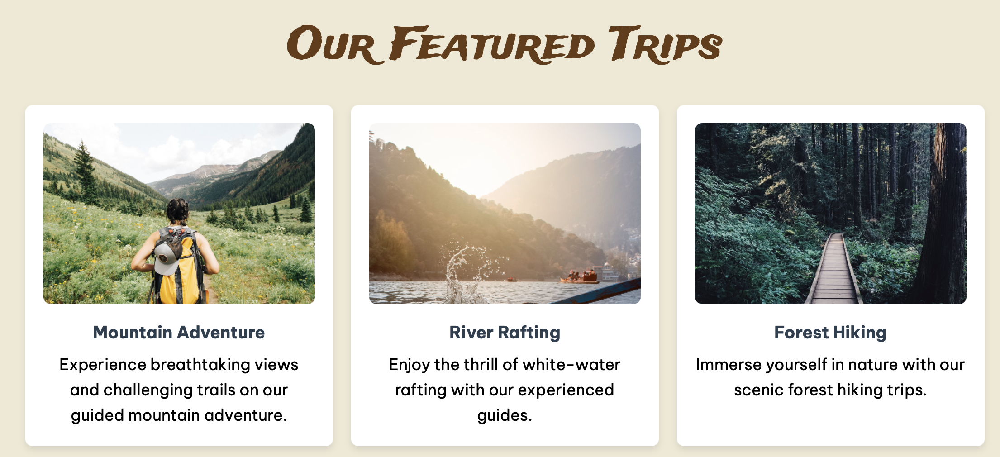
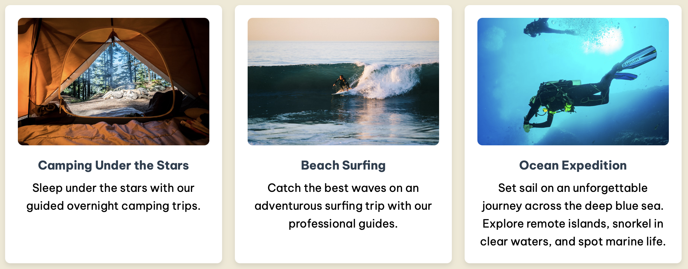

Aqui estão alguns dos projetos que venho desenvolvendo até o momento — de agentes de IA e automações a aplicações web e projetos acadêmicos em HTML, CSS, Python e C#.
Clique em "Ver mais" em cada card para ler a descrição completa do projeto.
Empresa de automação com IA que fundei, com produtos para clínicas, vendas e serviço em campo.
Agente de IA no WhatsApp que qualifica leads e agenda reuniões automaticamente para uma empresa de clínicas odontológicas.
Loja online de roupas personalizadas, com autenticação, catálogo e pedidos conectados ao Supabase.




Site responsivo em HTML e CSS criado para uma empresa fictícia de rafting.
Formulário com validação e perguntas interativas, construído em HTML e CSS.